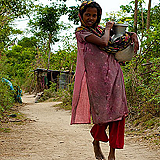

Galeria zdjęć "Azja"
-
Karthikai Deepam 2011
Festiwal Lamp obchodzony podczas
pełni miesiąca Karthikai (kalendarza tamilskiego), Tiruvannamalai, Tamil
Nadu, Indie, zdjęcia z dni 5-8 grudnia 2011

-
Bangladesz 2010 - część 2/2
Cox's Bazar, Teknaf,
Chandpur, Matoin, Ramgati, Brahmanbaria, Comilla, Sreemongal, Sylhet,
Sunamganj, Bishwamvarpur, Tetulia, Panchagarh, Rajshahi, Rohammadpur,
Barguna, Daulatkhan (13 kwietnia - 3 czerwca 2010)

-
Indie 2010 - portety i inni ludzie
Kolkata, Varanasi,
Chitrakoot, Orchha, Ajadpura, Bassi, Pushkar, Thanwla, Lakshmannagar,
Chadi, Ramdevra, Basanpeer, Jaisalmer, Jodhpur, Mumbai (7 kwietnia - 2
lipca 2010)
-
Indie 2010 - zabytki i inne miejsca
Kolkata, Varanasi,
Chitrakoot, Orchha, Ajadpura, Bundi, Bassi, Pushkar, Lakshmannagar,
Ramdevra, Jaisalmer, Jodhpur, Mumbai (7 kwietnia - 2 lipca 2010)
-
Bangladesz 2010 - część 1/2
Cox's Bazar, Teknaf,
Chandpur, Ramgati, Brahmanbaria, Sreemongal, Bishwamvarpur, Sunamganj,
Panchagarh, Rajshahi, Rohammadpur, Barguna, Daulatkhan, Matoin (13
kwietnia - 3 czerwca 2010)

-
Indie i Bangladesz 2010 - imprezy masowe i inne śluby
Święta, śluby, festiwale na subkontynencie - 7 kwietnia - 3 lipca 2010 r.
-
Indie, jesień 2008, część druga
Mumbai, Chennai, Varkala, Kollam, Hampi, Bylakuppe, Mysore, Gokarna, Nasik, Palitana, Bhuj

-
Indie, jesień 2008, część pierwsza
Mumbai, Chennai, Varkala, Kollam, Hampi, Bylakuppe, Mysore, Gokarna, Nasik, Palitana, Bhuj
-
Indie, lato 2008, część druga
Varanasi, Rajasthan
-
Indie 2008, lato, część pierwsza

-
Bangladesh 2008
-
Indie, Pakistan 2007, część druga
-
Indie, Pakistan, Iran 2007, część pierwsza